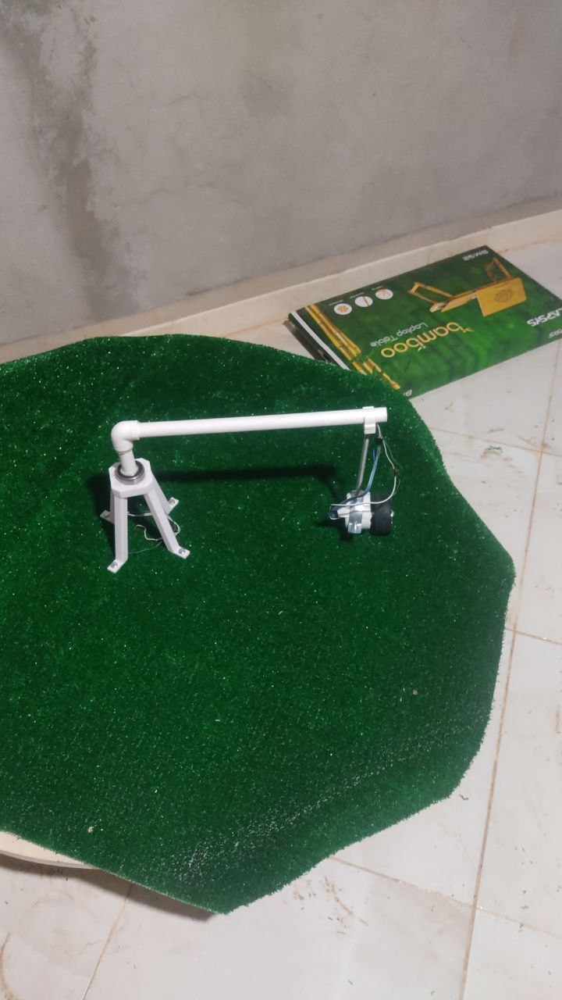

05
PROTOTYPE & 3D CAD VALIDATION • النموذج الأولي المخبري والتصميم ثلاثي الأبعاد
من مخبر جامعة قاصدي مرباح ورقلة إلى التطبيق الصناعي بالصحراء
انطلق مشروع Smart Desert Pivot كمذكرة تخرج ماستر في الإعلام الآلي والأنظمة الذكية ضمن القرار الوزاري 1275/008، حيث تم بناء مجسم حركي متكامل، نمذجة القاعدة المحورية بتقنية 3D CAD، واختبار منظومة الاستشعار والربط السحابي:

01إثبات المفهوم الحركي (TRL 3)
المجسم المخبري المصغر لمحور الرش الدائري
نموذج مصغر يحاكي دوران ذراع البيفو حول القاعدة الارتكازية فوق المساحة المزروعة، مزود بعجلة قيادة آلية لاختبار استجابة الدوران والإيقاف الآلي.

02النمذجة الميكانيكية (3D CAD)
التصميم ثلاثي الأبعاد للبرج المركزي الحامل
تصميم هندسي دقيق لهيكل القاعدة رباعية الأرجل مع فتحات التثبيت الميكانيكية وحلقة التمرير الدورانية لأنبوب الضخ الرئيسي.
SYSTEM ARCHITECTURE DIAGRAM • المخطط الهيكلي الشامل للنموذج
مخطط تكامل الحساسات، بوابة المعالجة، السحابة، ومنظومة الطاقة الهجينة

TECHNOLOGY READINESS LEVEL • سلم الجاهزية التكنولوجية (TRL)
خارطة الانتقال من النموذج الجامعي إلى المنتج الصناعي القابل للتسويق
| مرحلة الجاهزية | الفترة الزمنية | المنجزات التقنية والميدانية | الحالة |
|---|---|---|---|
| TRL 3 — إثبات المفهوم المخبري | 2024 – جويلية 2025 | بناء المجسم المصغر، برمجة Raspberry Pi وربط 8 حساسات مع سحابة Blynk/Firebase ونيل علامة مشروع مبتكر. | ✓ مكتمل وموثق |
| TRL 5 — تصميم صندوق الترقية الصناعي | خريف 2026 | اعتماد معمارية ESP32-S3 داخل خزانة IP67 ومجسات RS-485 السعوية المضادة لملوحة الصحراء. | ● قيد التنفيذ الحالي |
| TRL 7 — التجريب الحقلي في مزرعة نموذجية | شتاء – ربيع 2027 | تركيب أول صندوق ترقية SDP على محور حقيقي (40 هكتار قمح) في ورقلة أو وادي سوف وقياس الوفر المائي الفعلي. | المرحلة القادمة |